Parton Distribution Functions
methodology
November 2020
## Outline <div style="display: flex; margin: auto; width: max-content;"> <div> <ol> <li style="margin: 1em;">NN structure <ul> <li>multiple flavors</li> <li>inputs</li> </ul> </li> <li style="margin: 1em;">PDF uncertainties </li> </ol> </div> <div> <ol start="3"> <li style="margin: 1em;">Recent methodology <ul> <li>Minimization</li> <li>Cross Validation</li> <li>Hyperopt</li> <li>Cross Validation: validation set</li> <li>Constraints</li> <li>Loss function</li> </ul> </li> <li style="margin: 1em;">Testing methodology <ul> <li>Closure tests</li> <li>Future tests</li> </ul> </li> </ol> </div> </div>
# NN structure
## Neural Network <div style="font-size: 0.8em; font-style: italic; border: 1px solid #e0f0f0; border-radius: 2px; background-color: #e1f1fc40"> <p style="text-align: center; margin-bottom: 0; margin-top: 0.3em"> <strong>Deep feedforward networks</strong>, or <strong>multilayer perceptrons</strong> (MLPs), are the quintessential deep learning models. </p> <p style="text-align: center; margin-bottom: 0.3em; margin-top: 0"> The goal is to approximate some function $f^*$. </p> </div> <p style="text-align: right; font-style: italic; font-size: 0.6em; margin: 0.05em">I. Goodfellow, Y. Bengio, A. Courville </p> <div style="display: flex"> 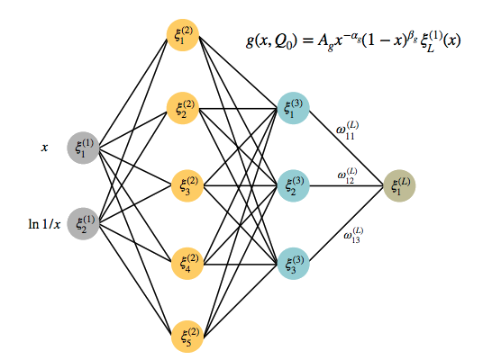 <div style="display: flex; flex-direction: column; justify-content: center"> <p>In our case the function to approximate it's exactly the PDF</p> <p> $$ f_i(x,Q^2) $$ </p> </div> </div>
## NN arguments Actually PDFs are functions of 3 arguments: 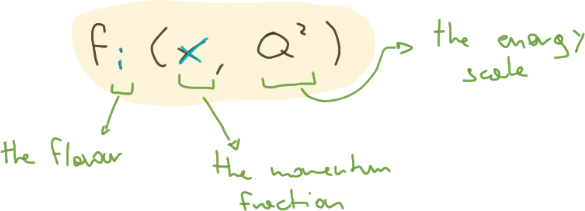 So one should expect to see them as three inputs to the neural network, but it's not the case. @--- ## $Q^2 \to$ evolution As we saw in the _theory_ part, the PDF $Q^2 = \mu_F^2$ dependence is accounted for by the DGLAP equations, so there is no reason of fitting it. For this reason the fitting scale is fixed, and in order to compare with the _experimental data_ the fitted candidate is evolved through <em style="color: #f7ad00">FKtables</em>. @--- ## Flavor is in the _output_ Actually this dimension was addressed differently in the past w.r.t. the present/future implementation: - before there was one separate NN per fitted flavor - at the moment the NN is asked for a vectorial output <div style="display: flex; justify-content: center"> 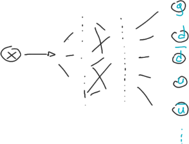 </div> <p style="font-size: 0.6em; font-style: italic;"> Actually I didn't work on it, but I believe that in this way PDFs that shares similar features are fitted by the same structure, factorizing the effort w.r.t. the full duplication. </p> @--- ## $\log x$ input <style> .reveal p { margin: 0.2em } </style> <p style="font-size: 0.7em; margin-bottom: 0.5em"> Actually the PDF has two different regime: </p> <ul> <li> the large $x$, in which the natural variable is actually $x$ </li> <li> the small $x$, in which instead the natural dependence dictated by the equations is on $\log x$ </li> </ul> <p style="font-size: 0.7em; margin-bottom: 0.1em"> For this reason two different inputs are given to the neural net, just to teach in advance some theoretical knowledge. </p> <p style="font-size: 0.4em; margin-bottom: 1.5em"> Moreover the neural network would freeze for the small $x$, since actually the difference is small, but instead there is much difference if considered in $\log x$. </p> <div style="display: flex; justify-content: center"> 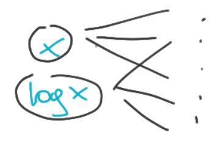 <div> <h5 style="font-size: 0.8em">feature scaling</h5> <p style="font-size: 0.5em"> Another option that is being investigated <em>right now</em> is to scale the input according to the data distribution. </p> <p style="font-size: 0.5em"> This is a common practice in the <em>ML community</em>, but it would be a novelty for PDFs. </p> </div> </div>
# PDF uncertainties
## The legacy Hessian approach **The old approach**: <ul style="margin-bottom: 1em"> <li> in the past the PDF was simply parameterized in some simple way </li> <li> the way the error was propagated from experimental data to the PDF uncertainties was simply the usual approach for fit parameters, based on Hessian. </li> </ul> **And for NN?** But how to apply and exploit it in the context of the hundreds of parameters of a NN?
## Monte Carlo replicas The proposal was to completely replace the Hessian approach with a Monte Carlo based one. <img src="assets/mc-replica-diagram.png" alt="MC replicas flow chart" style="height: 10em; margin: 0"> In this way not only the error is generated, but a sample representing the full distribution. <p style="font-size: 0.6em"> While gaussianity is assumed for experimental data. </p>
## Delivered PDF But what is actually shipped for a PDF? <img src="assets/pdf-replicas.png" alt="PDF set" style="height: 9em; margin: 0"> The conventional format has been defined by `LHPADF`, and it consists of a grid on $x, Q^2, i$. Multiple replicas are delivered in what we call a single _PDF set_.
# Recent Methodology
## Optimization One key ingredient of any fit algorithm is the **minimizer**, i.e. the way we _explore the parameter space_. <p style="margin-top: 1.5em; margin-bottom: 0.5em"> There are two well-known strategies that have been considered for the NNPDF optimization: </p> - **Genetic Algorithm** 🧬: it is a bio-inspired algorithm, based on selecting and mixing a population - **Gradient Descent** ⛰️: the old familiar method of following the slope
## Genetic Algorithm 🧬 <div style="display: flex"> <div> <p> The genetic algorithm consists in: </p> <ol style="list-style-type: upper-latin"> <li> generating a random initial population in the parameter space </li> <li> <strong>evaluation:</strong> evaluate the loss function on all the elements </li> <li> <strong>selection:</strong> select the most fitting elements </li> <li> <strong>mutation:</strong> reproduce, mixing the survivors' features </li> </ol> <p>The main advantage of this method is that guarantees a better <em>global exploration</em> of the parameter space.</p> </div> <div style="height: 12em"> <img src="assets/ga-flow.png" alt="flow diagram" style="height: 50%"> 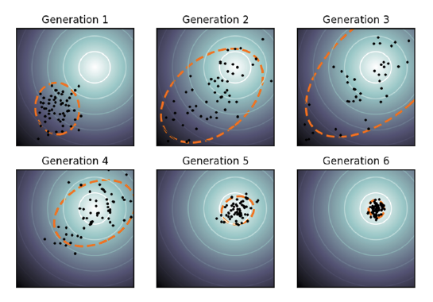 </div> </div> @--- ## Nodal Genetic Algorithm In NNPDF3.0 the collaboration discovered that it was better to consistently mutate a group of weights, rather than optimizing a single one at a time (as it was done before): > employing coherent mutations across the whole network architecture instead > leads to improved fitting performance [...] related by the structure of the > network <p> In practice each node was assigned a probability to mutate, and if a node is selected all the parameters that are related to the node are mutated. </p> <p style="font-size: 0.5em"> The mutation size is random for each mutant, modulated by a parameter and the number of generations: $$ w \to w + \frac{\eta r_\delta}{N_{\text{ite}}^{r_{\text{ite}}}} $$ </p>
## Gradient descent ⛰️ <p> The usual algorithm applied by the <em>ML community</em> (especially for deep learning) is instead the familiar gradient descent, extended to the neural network applying the so-called <strong>back-propagation</strong>. </p> <img src="assets/loss-function.png" alt="GD over loss"> @--- ## Back propagation I'm not going into the details, but for a physicist should be enough to know that it is just a fancy name for the **chain-rule**. 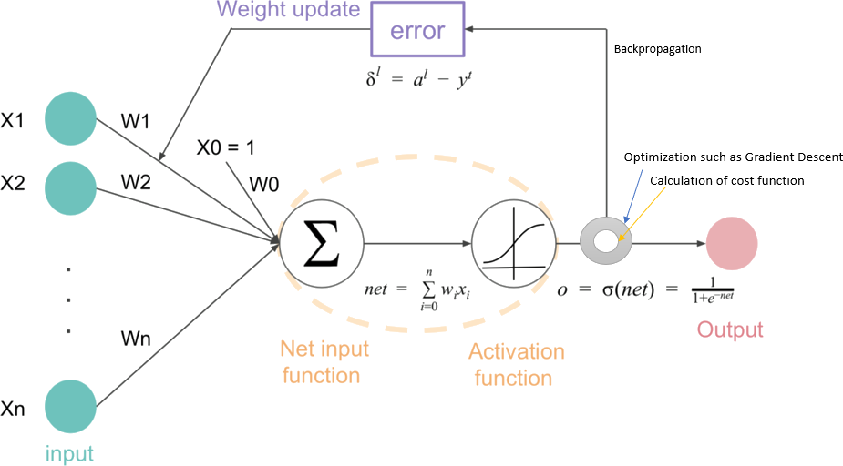
## SGD There are multiple alternatives related to **GD**: <div style="display: flex"> <div> <dl style="font-size: 0.7em"> <dt><span style="color: #4976C5">classic</span></dt> <dd>in order to compute the real gradient you need to compute the loss on the <strong>full</strong> dataset, <em>it is expensive</em></dd> <dt><span style="color: #05B254">mini-batches</span></dt> <dd>you can decide to evaluate the loss only on a small subset per iteration, a <strong>mini-batch</strong>, assuming it is representative on average</dd> <dt><span style="color: #7132A1">stochastic</span></dt> <dd>limit of mini-batches of size $1$</dd> </dl> </div> <div> <img src="assets/sgd.png" alt="SGD and minibatch"> </div> </div> In the last two cases the full dataset is explored in multiple steps, and a full iteration is called an <strong>epoch</strong>. @--- ## Even more kinds of GD <img src="assets/gd.gif" alt="Gradient Descent kinds comparison" height="450vh">
## Introducing `n3fit` Introducing the **SGD** is one of the main differences of the new fitting core of `NNPDF`. <div style="display: flex"> <div style="display: flex; flex-direction: column; justify-content: center; margin-right: 1em"> <p> It is not the only one: </p> <p> another relevant difference is the abstract architecture, that makes it flexible w.r.t. the old <code>NNPDF</code> </p> </div> 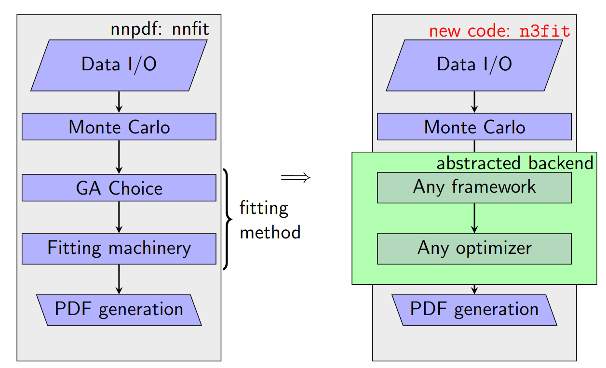 </div> But **SGD** is strictly coupled to the main one: _hyperopt_. @--- ## (More) detailed `n3fit` vs `NNPDF` comparison 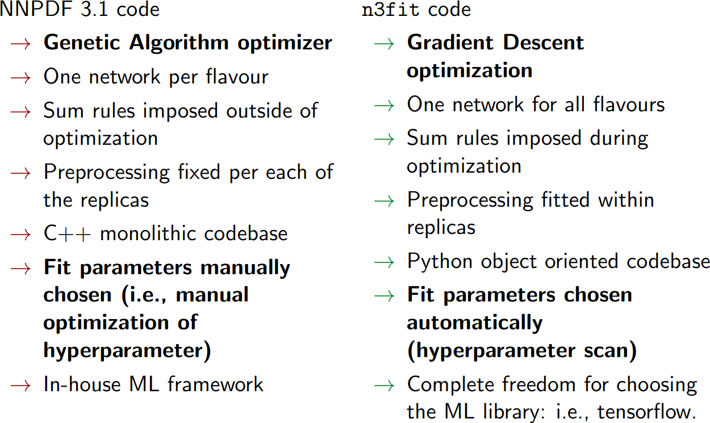
## Performance The main success of **SGD** is the performance obtained. But why performances are so relevant? <div style="display: flex"> <img src="assets/n3fit-performances.png" alt="Benchmark" width="45%"> <div style="margin-left: 1em"> <p> The reason is that if we can make more iterations, and furthermore <strong> more fits</strong> </p> <ul> <li>used for <em>phenomenological studies</em></li> <li>used for <em>hyperparameters search</em></li> </ul> </div> </div> Before diving in _hyperopt_ let's introduce at the same time another feature, and an actual _hyperparameter_.
## Cross Validation 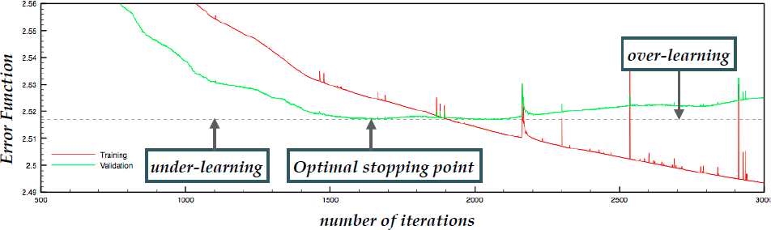 A severe issue in fitting is <span style="font-style: italic; color: #d11100">over-learning</span>: <p style="color: #3c0000; text-align: center"> learning features specific to the <strong>training dataset</strong> that do not generalize </p> But how do we know when we learned **enough** and **not too much**?
## Training - Test splitting We can assess the performance of our fit after the training stage by trying to predict a **previously unseen** portion of the dataset. 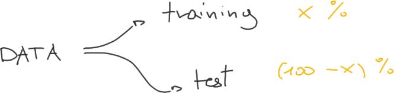 In this way we can really make a **fair test**, since testing data are **not correlated** to the learning process. <div style="margin: 1em 0"></div> **Q:** But if we are going to use this to tune our stopping then we are correlated again, isn't it? <p style="text-align: right"> <strong>A:</strong> <em>Yes, it is...</em> </p>
## Hyperparameters Actually what we have seen with the _stopping_ is an **hyperparameter**: <p style="text-align: center; color: #0059bf"> An <strong>hyperparameter</strong> is a parameter of the fitting algorithm. </p> <div style="margin: 1em 0"></div> Other examples of hyperparameters are: - the number of layers / number of nodes (topology) - the parameters' initialization (random, in which range, ...) - the activation function (per layer, per node, ...) - the Lagrange multipliers (for constraints) - the optimizer (SGD vs NGA) - ...
## Choosing hyperparameters How hyperparameters are chosen? - usually they are chosen by humans, with trials and errors - ✅ people are good at guessing meaningful starting point (high generalization power) - ❌ on the other hand the process is not very systematic this way - for example you would like to repeat the choice when new data are available - ❌ even worse: if they do not pay attention they can optimize on the same data they will try to predict, creating spurious correlations - another way is to apply a systematic search: **hyperopt** 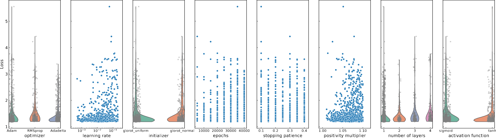
<h2 style="display: flex; justify-content: center"> <p style="font-size: 0.9em"> Cross Validation - Reloaded </p> <img src="assets/matrix.gif" alt="matrix" width="50px"> </h2> How to apply this systematic search? <ul> <li>the <strong>space</strong> 🌌 of hyperparameters should be defined <ul> <li>this will include arbitrary cuts</li> <li>but remember: <em>humans are good at guessing!</em></li> </ul> </li> <li>a <strong>strategy</strong> 💡 for the space exploration should be chosen <ul> <li>usually a simple grid scan is enough</li> </ul> </li> <li>a <strong>metric</strong> 📏 is needed <ul> <li>in order to compare the result of one methodology against any other</li> <li>should be uncorrelated to the training</li> <li>but also uncorrelated to the test</li> </ul> </li> </ul> Actually the problem of the _metric_ is the very same we had when we were speaking about the _stopping_, exactly because **it was an hyperparameter**! <p style="text-align: right"> <strong>Solution</strong>: let's split again! </p>
## Validation set So the solution is then to split in 3 rather than 2 sets: <p style="font-weight: bold; text-align: center"> <span style="color: #73A645">Training</span> - <span style="color: #0DAFC4">Validation</span> - <span style="color: #DF584C">Test</span> </p> 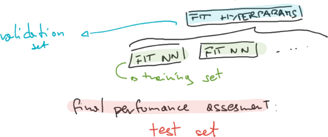 But this solution actually foreshadows a new problem: are we **decimating** too much our dataset?
## K-folding <div style="display: flex"> <div style="width: 110%; margin-right: 1em"> <img src="assets/kfolding.png" alt="k-folding"> </div> <div style="display: flex; flex-direction: column; justify-content: center"> <p> If actually we are going to obtain a poor split, a solution is to <em>recycle</em> data: it is caled <strong>k-folding</strong>. </p> </div> </div> <div style="display: flex"> <div style="display: flex; flex-direction: column; justify-content: center"> <p> This can be done at a nested level, for both: <ul> <li>training-validation pair</li> <li>anything-test pair</li> </ul> </p> </div> <div style="width: 90%"> 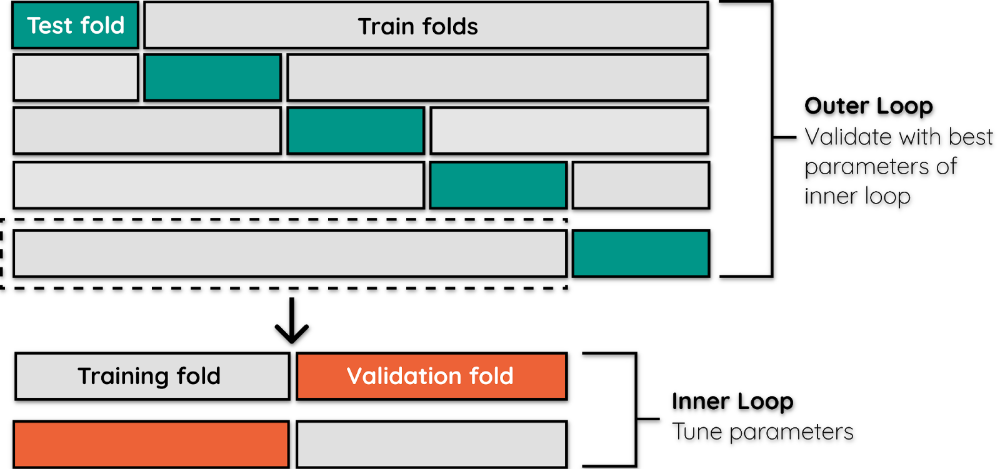 </div> </div>
## Constraints Another _requirement_ we would like to add to our result is to provide physical objects: - the PDF should respect **sum rules** (momentum and number) - moreover it should make the **physical observables positive** - remember that from NLO PDF are just functions, and this property it's not guaranteed 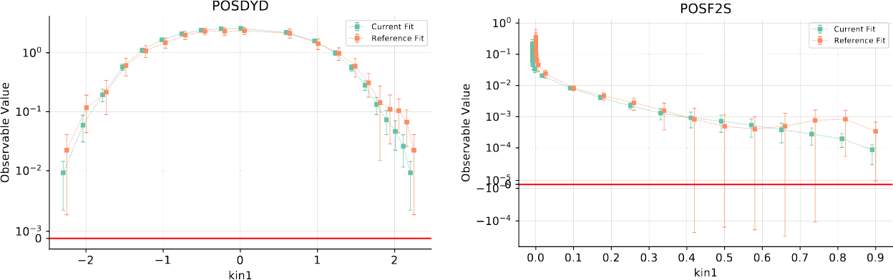
## Applying constraints 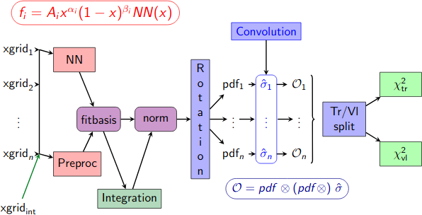 There are two ways of implementing the constraints: - in the **loss function**, use _Lagrange multipliers_ to enforce a weight - as a **post-selection** - i.e. remove replicas that do not respect some conditions - (expensive, post-selection should do almost nothing)
## Loss function The <strong style="color: #08ADC3">loss function</strong> is exactly what establish which parameters are better and which worse. <ul style="margin: 1em"> <li> not only <strong style="color: #F2B301">the minimum</strong> of the loss is relevant </li> <li>also <strong style="color: #77A94A">the shape</strong> is important <ul> <li> enhancing the minimum and avoiding large secondary local minima may speed up the fit and improve the final result </li> <li> a well known case is the <strong>convex optimization</strong> </li> </ul> </li> </ul> Which _loss_ is used for PDF fit? <p style="text-align: center"> $\chi^2$ + Lagrange multipliers </p> @--- <h2 id="fk-tables">FK-tables</h2> <style> #chi2-tag { position: absolute; top: 1.4em; height: 1.5em; display: flex; justify-content: center; flex-direction: column; padding: 0 0.2em; font-size: 0.5em; border: 1px solid #0000003f; border-radius: 3px; } #chi2-tag:hover { background-color: #87b9cc26; border: 1px solid #46a1c426; } #chi2-tag:active #chi2 { display: none; } #chi2-tag:active #snowman::after { content: "☃️"; font-style: normal; } </style> <p id="chi2-tag"> <em>🎶 Do you want to build a <span id="chi2">$\chi^2$</span><span id=snowman></span>?</em> </p> We'd actually want $$ f_i(z, \mu_{F, 0}^2) \mapsto \chi^2(\{\sigma_{h,th}[f]\}, \sigma_{h,exp}) $$ but _computing convolutions it's expensive_, and in order to make each step multiple convolutions are required. For this reason everything is precomputed, and evaluated on a grid: <img src="assets/fktables.png" alt="FK-tables" style="margin-bottom: 0"> <p style="font-size: 0.6em; margin-top: 0"> The <strong style="color: #08ADC3">FK-table</strong> is composed by the <em style="color: #058c9e"> DGLAP evolution</em>, and the <em style="color: #058c9e">partonic cross-sections</em> $\hat{\sigma_i}$. </p> <p style="font-size: 0.5em; margin-top: 0"> Notice that also the PDF is <strong>always</strong> delivered as a discretization on a grid, and then interpolated (e.g. by <code>LHAPDF</code>). The alternative would be to convolute the NN, too heavy. </p>
# Testing methodology
## How to test? <style> </style> How to _validate_ a fit methodology? Of course **from results**: 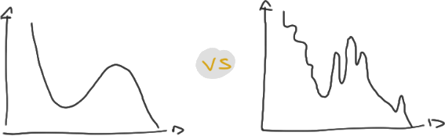 but which one <em class="txtclr blue">is better</em>? and <em style="color: #77A94A">why</em>? <p style="padding: 0 1em; margin-top: 0.5em"> There <span class="hlight yellow">may be</span> <span class="hlight blue">theoretical motivations</span>, but <span class="hlight red">no one knows</span> the physics <em class="hlight red">a priori</em>. </p>
## Closure tests <div style="display: flex"> <div style="width: 110%; margin-right: 1em"> 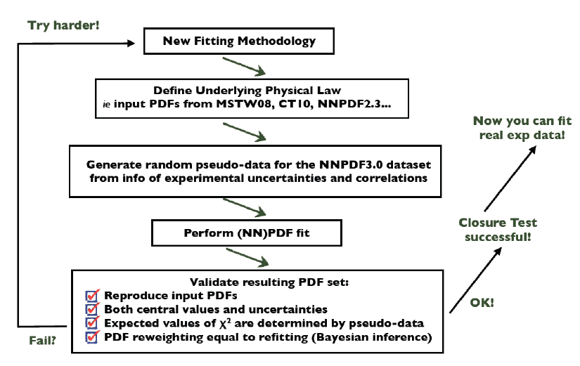 </div> <div style="display: flex; flex-direction: column; justify-content: center"> <p> The <strong class="txtclr green">solution</strong> is to create our <em> fake data</em> from a <em class="txtclr blue">known physics</em>, and then fit it (pretend not to know). </p> <p> <span class="hlight yellow" style="background-color: rgba(var(--rgb), 0.1)"> Do you know any <em>physics</em>? </span> </p> </div> </div> <img src="assets/closure-flow.png" alt="Closure sketch"> <p style="font-size: 0.7em"> We are using <span class="hlight blue">theory</span> to generate <span class="hlight blue">$\sigma_{h, cl}$</span>, instead of using <span class="hlight yellow">$\sigma_{h,exp}$</span>, who come from an unknown <span class="txtclr green">nature-made <strong>proton</strong></span>. </p>
## Future tests We would like our fit to be able to predict data from <span class="hlight blue">new experiment</span>, that will be <span class="hlight blue">made in the future</span>. <p style="margin: 1em"> <strong>Q:</strong> But how to <span class="hlight green">test <strong class="txtclr green">the future</strong></span>? </p> <strong>A:</strong> let's put our <em class="txtclr red">"present"</em> a little bit in the <strong class="txtclr yellow">past</strong> 😃 <div> 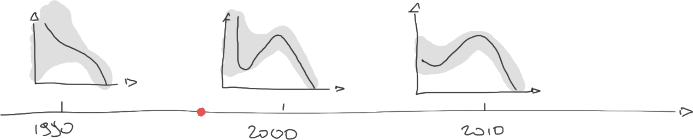 <p style="text-align: right; font-size:0.5em; width: 50%; float: right"> <strong>DISCLAIMER:</strong> the drawing it's just an example, no feature correspond to an actual PDF </p> </div> @--- ## Future tests - algorithm In particular what we can do is: <ol> <li> divide <span class="txtclr red">all data</span> in <span class="txtclr red"> chronologically increasing</span> sets </li> <li> fit them separately </li> <li> <span class="hlight blue">compare</span> <span class="txtclr yellow">older</span> fits to <span class="txtclr yellow">newer, <em>future</em></span> data <ul style="font-size: 1.3em"> <li> also compare replicas' <span class="txtclr yellow">features</span> <ul> <li><span class="txtclr green">stability</span> across sets</li> <li><span class="txtclr green">appearance</span> of new ones</li> </ul> </li> </ul> </li> </ol>
<link rel="stylesheet" href="assets/proton.css"> ## The End <div class="proton"> <div class="valence quark" style="top: calc(20% - var(--radius)); left: calc(50% - var(--radius))"></div> <div class="valence quark" style="top: calc(70% - var(--radius)); left: calc(80% - var(--radius))"></div> <div class="valence quark" style="top: calc(70% - var(--radius)); left: calc(20% - var(--radius)); animation-delay: calc(var(--quark-time)/3)"></div> <img class="gluon" src="assets/gluon1.png" style="top: calc(90% - var(--radius)); left: calc(50% - var(--radius))"> <img class="gluon" src="assets/gluon1.png" style="top: calc(60% - var(--radius)); left: calc(30% - var(--radius)); transform: rotate(120deg)"> <img class="gluon" src="assets/gluon1.png" style="top: calc(60% - var(--radius)); left: calc(70% - var(--radius)); transform: rotate(240deg)"> </div> <div class="small proton" style="--radius: 30px; animation-delay: -3s"> <div class="valence small quark" style="top: calc(20% - var(--radius)); left: calc(50% - var(--radius))"></div> <div class="valence small quark" style="top: calc(70% - var(--radius)); left: calc(80% - var(--radius))"></div> <div class="valence small quark" style="top: calc(70% - var(--radius)); left: calc(20% - var(--radius)); animation-delay: calc(var(--quark-time)/3)"></div> </div> <div class="small proton" style="--radius: 40px; top: 50%; left: 20%; animation-direction: alternate; animation-delay: -1s"> <div class="valence small quark" style="top: calc(20% - var(--radius)); left: calc(50% - var(--radius))"></div> <div class="valence small quark" style="top: calc(70% - var(--radius)); left: calc(80% - var(--radius))"></div> <div class="valence small quark" style="top: calc(70% - var(--radius)); left: calc(20% - var(--radius)); animation-delay: calc(var(--quark-time)/3)"></div> </div> <div class="small proton" style="--radius: 40px; top: -50%; left: 40%; animation-direction: reverse; animation-delay: -1s"> <div class="valence small quark" style="top: calc(20% - var(--radius)); left: calc(50% - var(--radius))"></div> <div class="valence small quark" style="top: calc(70% - var(--radius)); left: calc(80% - var(--radius))"></div> <div class="valence small quark" style="top: calc(70% - var(--radius)); left: calc(20% - var(--radius)); animation-delay: calc(var(--quark-time)/3)"></div> </div>